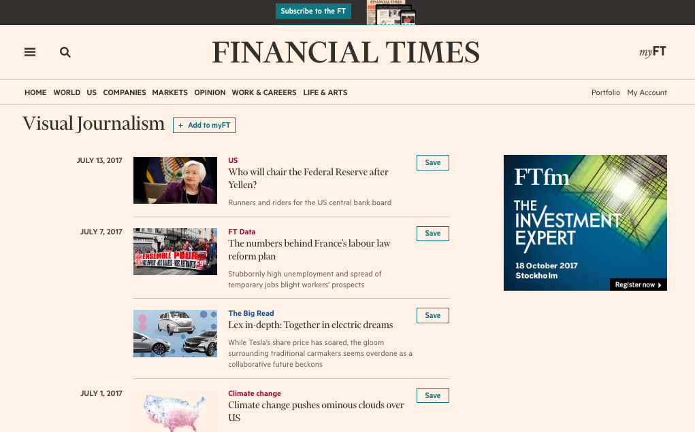

谁在做这些事？
Graphic team
Data journalists
就像其他新闻单位一样，
FT的起步，与编辑台的转型环环相扣。
团队在做什么？
① 多媒体报道
② 结构性故事（menu-and-list）
③ news applications/data vis
Visual Journalism (multimedia)

皮尤研究中心：
"只有63%的美国成年人看得懂散布图（scatter chart）"
"Education is important."
FT的方向：
① 故事优先
② 不追求无谓的互动效果
③ 在社交媒体上使用gif
FT的方向：
① 故事优先
② 不追求无谓的互动效果
③ 使用GIF
FT的方向：
① 故事优先
② 不追求无谓的互动效果
③ 使用GIF
Graphics Interchange Format（GIF)
相较于png、jpeg，画质低。
能支援动态图形，档案比影片小。
convert *.png gif-layers.gif
请把档案格式是png的所有档案（*）
转换（convert）成"gif-layers.gif"档案
史书华
-
FT中文网数据编辑
-
当过财经记者、写过书、运营过新闻网站、教过数据新闻
-
曾获得国际SND多媒体设计奖、SOPA（亚洲出版协会）最佳数字新闻、infographics、解释性新闻等奖项
-
纽约大学新闻所毕业
-